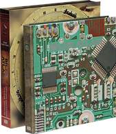

Bilim Atlası❮


Kitapta fikir ve teorilerin yanı sıra Pisagor’dan Aristo’ya, Einstein ve Marie Curie’ye kadar teorilerin yaratıcılarına da yer verilirken, 19 önemli ismin biyografileri de bulunuyor. Bilim Atlası ele aldığı dünyayı okuyucuya anlaşılır ve rahat okunur bir şekilde sunarken, ayrıca Eratosthenes’ten Richter’e kadar öncüler hakkında bilgi veren 100’e yakın yazıyı da okuyucuyla buluşturuyor. Kitabın sonundaki 54 sayfalık geniş referans bölümü ise eski ve çağdaş bütün büyük bilim insanlarının kısa biyografilerinin yanında çeşitli bilimsel gerçeklere değinen bir de eki içeriyor. Adam Hart-Davis’in hacmine vurgu yaparak, bugüne dek üzerinde çalıştığı en zorlu iş olduğunu belirttiği Bilim Atlası, dizinin diğer atlasları olan Sanat Atlası ve Tarih Atlası ile birlikte koleksiyonun en değerli parçalarından biri olarak hazırlandı. Hayatı anlatan bu kitap, her evde bulunması gereken olağanüstü bir eser.
Zengin görsel malzeme; astronomi ve uzay keşiflerinin tarihi ile astronomi konusunda tüm merak edilenleri kapsayan sade, kolay anlaşılır bir metne eşlik ediyor. Uzayın derinliklerinin benzersiz fotoğrafları, gezegenlere ve astronominin geçmişine yönelik etkileyici görüntüler, 600’den fazla resim… Gökyüzü Atlası; göklerde yabancı, uzak ve sessiz görünen ama bizi de kapsayan büyüleyici bir dünyayı keşfetmek isteyenler için...
Evrenin en etkileyici canlısını yakından tanıyın Bu etkileyici öyküler, insanlar ve diğer canlılar arasındaki ilişkiyle ilgili olsa da kitapta anlatılan doğa, yalnızca bitki ve hayvanlardan ibaret değil. Çarpıcı bilgilerle donatılmış ve orijinal görsellerle zenginleştirilmiş İnsan Atlası, türümüzün akıl almaz koşullarda nasıl hayatta kalabildiğini kavramak için vazgeçilmez bir kaynak. Özel kutusunda sunulan İnsan Atlası, Boyut Koleksiyon Kitaplar dizisinin en nadide parçalarından biri olmaya aday. İnsan Atlası, kamerayı kendimize, insan türü üzerine çevirtecek ilk belgesel. Bu kitap, farklı yaşam alanlarında nasıl varolduğumuzun, farklı canlı türleri ile etkileşim içinde olmanın olağan dışı yollarını buluşumuzun ve doğanın gücü ile nasıl başa çıktığımızın; özetle yeryüzünün en başarılı türleri oluşumuzun hikâyesi...
Eserde Afrika, Okyanusya, Asya ve Amerika kıtaları da dahil olmak üzere dünyanın dört bir yanındaki efsanevi dünyaların ve kayıp uygarlıkların keşif maceraları inceleniyor. İtalyan gazeteci-yazar Roberto Giacobbo imzalı Kayıp Dünyalar Atlası; bu kadar çok kayıp medeniyetin öyküsünü bir arada bulabileceğiniz, belki de tek koleksiyon çalışması... Dünya tarihine ışık tutan bu eşsiz eserle; gökyüzüne uzanan piramitlerden, Mayalar'ın kayıp şehrine; dünyanın en eski anıtlarından, hüzünlü güzellik Tac Mahal'e kadar ulaşılmaz olarak görülen topraklara uzanan bir maceraya yelken açacaksınız.
Büyük kısmı Kraliyet Coğrafya Topluluğu'nun zengin tarih koleksiyonundan yararlanılarak oluşturulan eserde birbirinden çarpıcı illüstrasyonlar da yer alıyor. Ayrıca haritalar, dergiler, arşiv belgeleri ve 500 yıllık kayıtlı belgeler ile kişisel ve anonim öykülere de yer verilen Keşifler Atlası tam 360 sayfa. Özel üretim bez cildi ve özel üretim kutusunda sunulan bu kitapta Kaşiflerin inanılmaz öykülerine ise Frank Hurley gibi erken dönem fotoğrafçılarının eşsiz kareleri eşlik ediyor.
Kutuplar'ın dört mevsimini de içeren eser, nefes kesici fotoğrafların yanı sıra aynı isimli belgesel filmlerinden alınan, unutulmaz sahnelerle görselleştirildi. Ayrıca kamera arkasındaki inanılmaz maceraların hikâyeleri de anlatılıyor. Dünya'nın uçlarındaki yaşamları kayıt altına alan Kutuplar Atlası, penguenlerden katil balinalara, kutup ayılarından kurtlara kadar Kutup'ta yaşayan hayvanların yaşamlarının izini sürüyor. Böylece büyük buzulların erimesinin hem onların hem de insanoğlunun hayatında nasıl değişikliklere yol açtığını açığa çıkarıyor. Daha önce hiç görmediğiniz sahneler, penguenler, öldürücü balinalar, kutup ayıları ve kurtların olağanüstü hayatları… Bu kitap ile baharda buzulların erimesinden 24 saat süren yaz günlerine, buzulların oluşumunun başlangıcından uzun süren karanlık kış günlerine kadar, dramatik manzaraları ve hayvanların orada yaşanan duygusal yaşam öykülerini görebileceksiniz.
Dikkat çekici görseller dünyanın farklı bölgelerinden çalgı ailelerinin, gelişimini sergilerken Mozart, George Gershwin, Elvis Presley, David Bowie, Aşık Veysel ve Leyla Gencer gibi ikonlaşan öncülerin profilini gözler önüne seriyor. Zengin içerik ve görsellikteki bu koleksiyon kitap, müziğin dünyayı nasıl şekillendirdiğinin gerçek hikayesi...
Bu kitabın amacı, “konserve tenekesinin üzerinde ne yazıyorsa onu yap” ibaresi kadar net. Hedef; genel okuyucuya sanatın amacı, sanatın bin farklı deneyimine bin kapı açmak... –Ve böyle yaparak müze ve sanat galerisinin, kilise ve manastırın, tapınak ve caminin dünyasını daha erişilebilir ve keyfi çıkarılabilir hale getirmek. Kitabın sayfalarını karıştırırken Renoir’dan Reinhardt’a, Michelangelo’dan Damien Hirst’e kadar pek çok sanatçı hakkında zengin bilgi bulacak; çeşitli tarihsel çağlar ve sanat hareketleri hakkında kısa ama doyurucu bilgilerle karşılaşacaksınız. Dahası, çağlar boyunca plastik sanatçıların kullandığı temel gramer ve sözcük dağarcığının alfabesi sayılabilecek renk, kompozisyon, perspektif gibi konuların kısa tanımlarını da bulacaksınız.
Boyut, Sırlar Atlası ile okurları geçmişten günümüze gizemlerle dolu, heyecanlı bir yolculuğa davet ediyor. Özel tasarımı, göz alıcı kutusu, sert kapaklı cildi ve muhteşem görselleriyle efsanevi gizemleri parmaklarınızın ucunda hissetmenizi sağlayacak 321 sayfalık bu muhteşem koleksiyon kitabı, dünyanın en büyük sırlarını bir araya getiriyor. Tapınak Şövalyeleri'nden Nostradamus'a, Atlantis'ten Bermuda Şeytan Üçgeni'ne, insanlık tarihinin çözülemeyen gizemleri, Sırlar Atlası'nın sayfaları arasında sizi bekliyor. Atlantis, Bermuda Şeytan Üçgeni, Drakula, UFO'lar, Nostradamus, Enigma ve dünyanın keşfetmeye değer daha pek çok sırrı Sırlar Atlası'nda...
İmparatorluklardan krallıklara dünya tarihinin şaşırtıcı bilgilerinin yer aldığı, orijinal görsellerle zenginleştirilmiş sıra dışı bu başyapıt, insanoğlunun hikâyesine şekil veren teknolojik atılımları keşfetmenizi sağlarken; her açıdan ufkunuzu da açacak. Orijinal, aydınlatıcı, ilgi çekici, görsel olarak çarpıcı ve güvenilir bilgilerle donatılmış olan Tarih Atlası, bugün bulunduğumuz noktaya nasıl geldiğimizi anlatan eksiksiz bir rehber olmasıyla insanoğlunun tarih serüvenine tanıklık etmenizi sağlayacak.